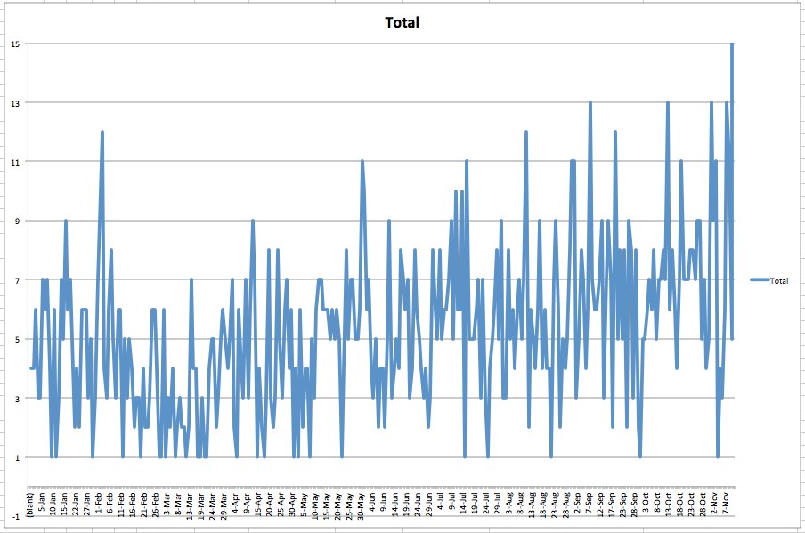
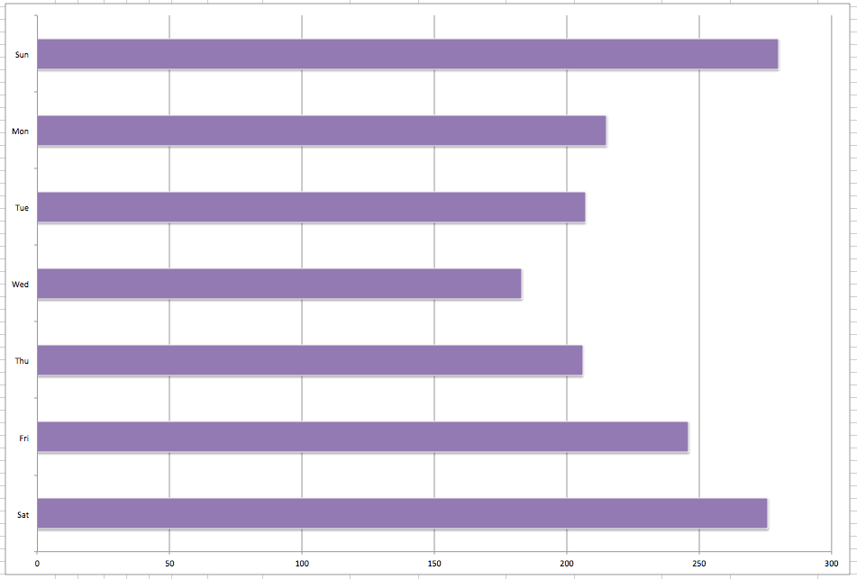
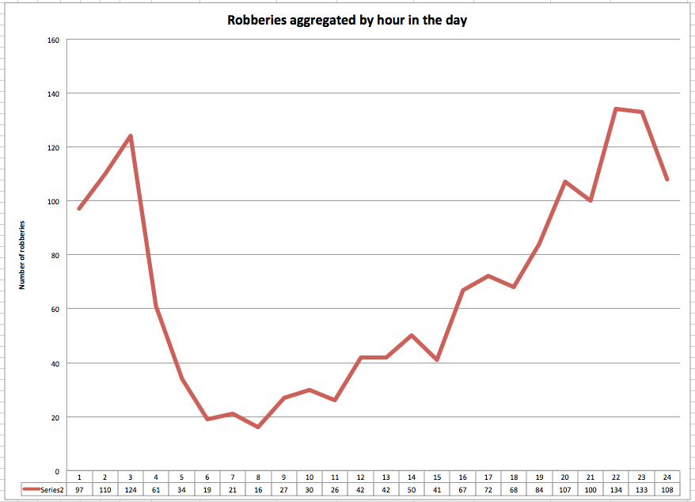
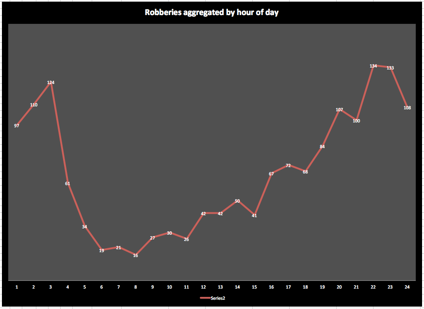
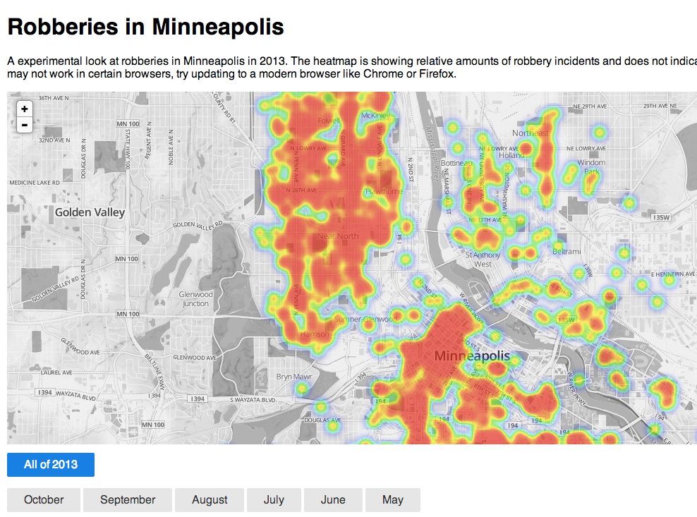
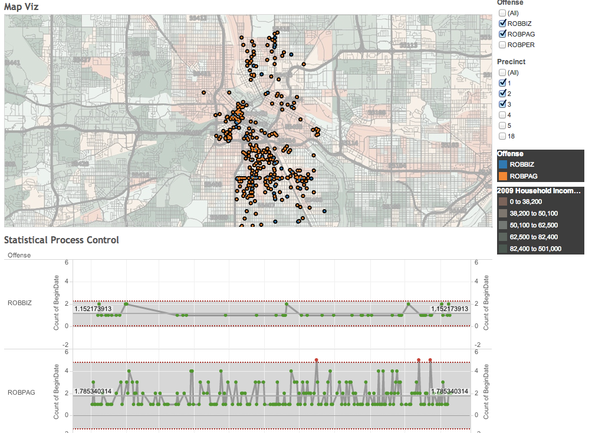
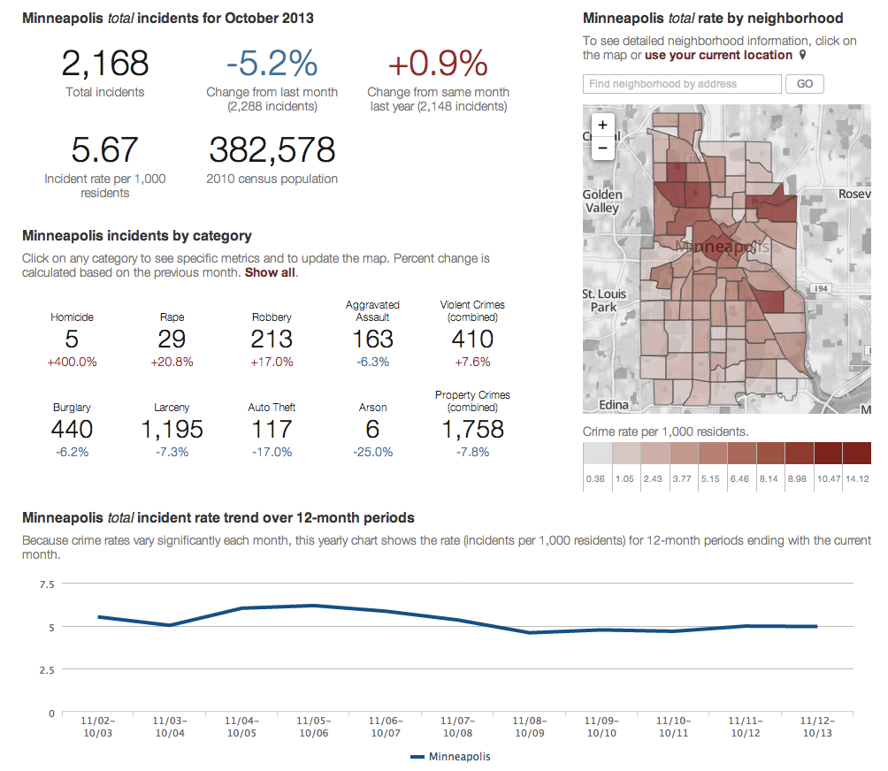

Telling stories with data
Alan Palazzolo
Interactive News Developer
* I am not a data visualizatoin expert.
Twin Cities (Data) Visualization Group
meets the 3rd Tuesday of each month
* I also run the TC Data Viz meetup.
Data visualization is __________.
* To me, data visualization is just as generic as it sounds.
* It's really any visual representation of data or information.
* It's functional art (as opposed to a fine art).
* But it needs to be more than just practical.
* It often can server a specific function.
* Almost most importantly, it needs to look good.
The new hotness
* Data visualization has been going on for a long, long time.
* In my opinion it comes down to a few things:
A simple example
* Let's go through an overly simple example.
42
* Here we have data.
42%
* Let's add a bit of context.
42%
* Let's try a different background.
42%
* But the blue was a bit dark, so lets try something lighter.
42%
* Let's make it bigger, as it is the focus of visualizaiton.
42%
* Let's try a different font.
42%
* A sans-serif font usually works best for numbers.
42%
* Let's increase the opacity of the number just a tad to let it blend into the background.
42%
of people like the number 42
* Oh, and right, no one actually knows what we are talking about here, so let's add a label.
42%
of people like the number 42
* But if we think about our audience a little more (ie. you all), then this background is not really great for a projected display.
Some more data
* Let's talk about a set of examples that uses more than just a single number.
* I am a huge fan of maps.
* Most of the maps I will show you are really basic, or what most people would call basemaps, but there is plenty to look at.
* The roads really come out here
* The Map of the Dead, the zombie apocalypse
* This is example from MapBox, a great service that allows you to make custom maps like these.
* This one is what Github uses for its new GeoJSON rendering feature
* The next few are from Stamen, an amazing studio out in SF that makes some really powerful data visualization
* Terrain from Stamen
* Watercolor from Stamen
* Park Tiles from the National Park Service
* Greenpeace map focusing on attention to ocean issues like fishing and whaling.
* Then there is satellite imagery
Robberies
* At our first TC Data Viz hack day, a day where about 50 people from the group met to just work and learn together on projects and technologies.
On July 18, 2013 a robbery happened involving a business near the intersection of Lake and Portland at or around 11:35 PM and has been assigned a case number of ABCXYZ123 .
* This is an example row of data.

* So, we first just bring it into Excel and do some basic grouping and charting. Excel charts are not a great finished product but can be really awesome for finding trends and doing quick analysis.

* This show number of incdents per weekday, starting with Sunday

* This is showing number of incdents by time of day

* The same chart but with Excels awesome formatting options

* I also spent some time making a heat map really quickly to maybe see what places get more robberies.

* This is piece done in Tabluea
An overview of crime
* The last example I will go through is a crime dashboard we made for Minneapolis at MinnPost.
There were 10 robberies in the Wellford neighborhood in the month of October, 2013 .
* This what is on their website

* (go through interface)
Thanks.
Questions?
Code for slides are on Github .